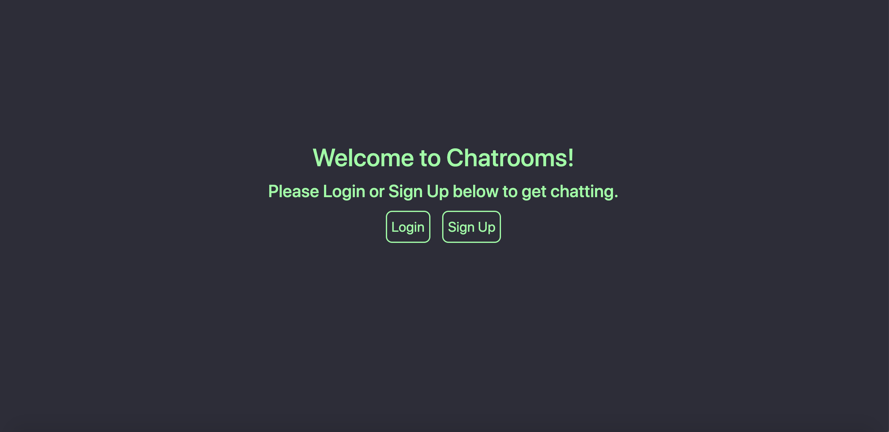

Chatrooms
Client-Server Architecture in Computer Networks
I worked in a team to design a client-server based chatroom application using Flask, which would allow users to chat in groups of their choosing.

Research, Ideation, and Structural Design
We built this application for a course focused on computer networks, and the networking applications covered in the course were run via command line. It was important to us to challenge ourselves to build something more real-world, and so we took on the task of developing a web component alongside the networking client-server code.
Interface Design and Execution

Landing page for a logged in user: displays a personalized greeting and list of all rooms the user is a part of.
I personally handled all the HTML and Jinja2, as well as the styling of the application in CSS. I also helped the team with several of our Flask routes and setting up our databases in MongoDB.
Inside a group chatroom: displays a list of previously sent messages with sender and sendtime, and gives the user space to send new messages, edit the room, or return to Home.
The user interface design was modeled after old-school chatrooms, with typically simple UIs — often presented in a popular dark theme — that spanned few pages. I chose the color scheme, font family, and made all other style decisions in accordance with accessible design practices.
Our Flask application contains several Jinja2 templates in the front-end, as well as client code that we decided to execute in JavaScript - specifically, Ajax, in order to take advantage of its real-time abilities.
The video on the right provides a quick walkthrough of our entire application.
This demo follows first the perspective of a returning user, then a new user, and finally shows an interaction between the new and returning user.